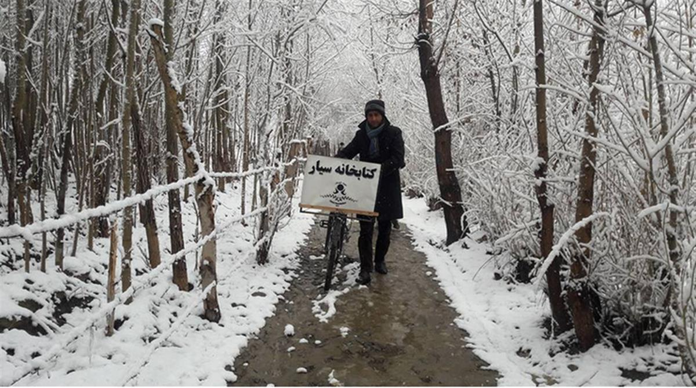
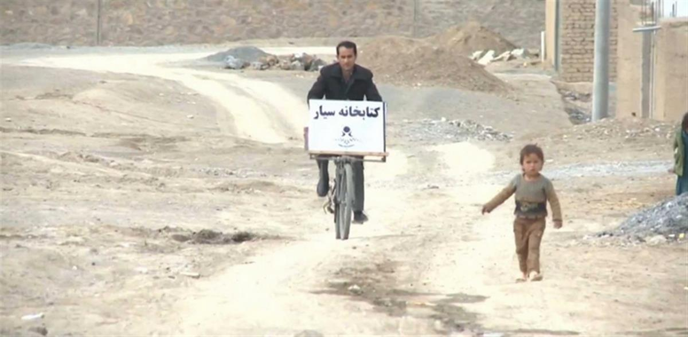
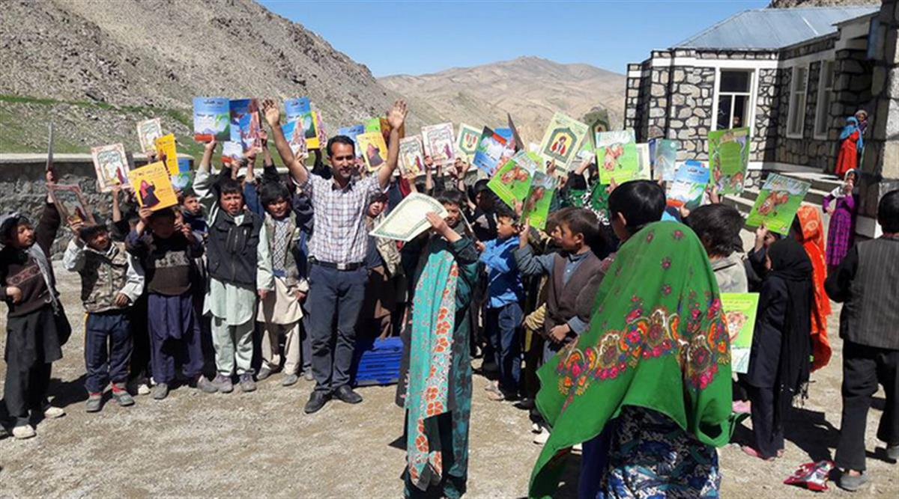

School teacher Saber Hosseini from Bamyan, Afghanistan, cycles more than an hour to deliver books to children in remote villages in the province.
Saber Hosseini is a teacher and writer, who believes that education is the only way to end ignorance and poverty. With this mission in mind, he travelled to one of the most dangerous and impoverished countries in the world, Afghanistan. Everyday, he would ride his bike to remote countryside of the Bamyan province, kilometres at a time, in order to grant basic education to children. He would then, lend some of the 200 children’s books he bought from his own budget, so that these kids could practice and enjoy reading until the next time he visits the town. Despite all the danger and threats in Afghanistan for an educator, he stood his ground and persisted. Now, it has been over 6 months from the time he made his first visit to a town.
According to UNESCO, in the year 2000, only 12.6% of women and 43.1% of men in Afghanistan had some formal education. However these figures might be even lower due to the forced closure of thousands of schools throughout the recent wars. Where there’s school, often, due to the low budget, there’s no traditional classroom, so the students are taken outside, or to a tent, and a group of students try to learn from the teacher. Saber Hosseini is a very strong believer in equal rights for everyone. Wherever he goes, he tries to encourage all the children, specially the young girls. He believes that Afghanistan needs more educated women leaders.
As all the other good deeds that spread with time, people from all around the world started to hear about The Children’s Book Foundation, and with their generous assistance, Saber Hosseini has now opened the first library in the rural areas of the Bamyan Province, which has a population of over 65,000 people. This library has a collection of 6,000 books generously donated from all around the globe. At an interview with Saber Hosseini, he said, “When I hand these children the books they want, the expression on their innocent faces is priceless.”
There’s still so much more to be done for the young minds of Afghanistan. Education truly is the only way to save the children in war torn countries. In a country where there is hatred, corruption and war, with nowhere to be safe and nowhere to escape to, education is like a light shining from the darkness. Education is not a luxury; regardless of one’s gender, race or age, it’s a human right. Some of us take this human right for granted, while the rest of the world is in envy. However, The Children’s Book Foundation is still not reaching the millions of the other children in Afghanistan, who don’t even have the luxury of borrowing a book to read. Saber Hosseini says “I hope to one day see all the children of Afghanistan to go to schools and sit in proper classrooms, so that some day, they could make this world a better place.”



SOURCE: Children’s Book Foundation